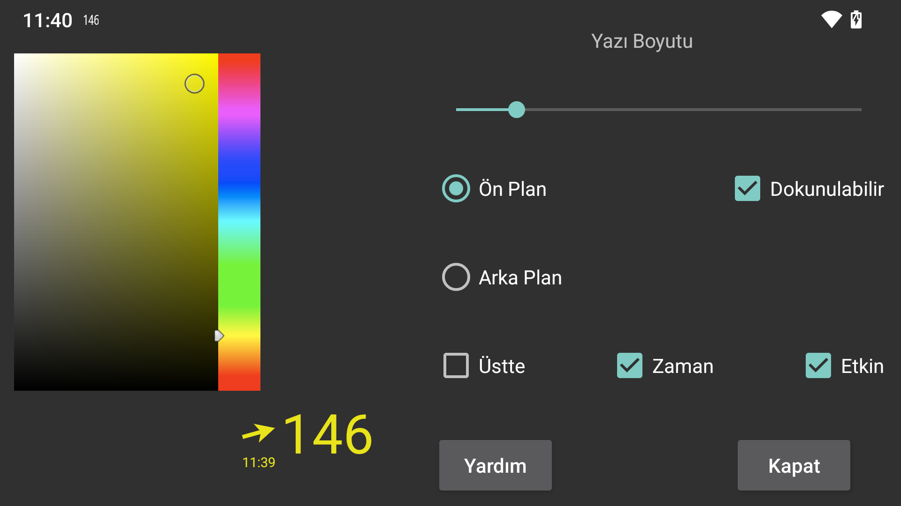

Burada yüzen glikozun yazı tipi boyutunu,ön plan ve arka plan rengini ayarlayabilirsiniz.
Dokunulabilir: Ayarlandığında, yüzen glikozu parmağınızla hareket ettirebilir ve uzun süre basarak (hareket ettirmeden) küçültebilirsiniz. Dokunma özelliği ayarlanmadığında, dokunmatik giriş, yüzen glikozun altındaki pencereye gider, böylece yüzen glikozun altındaki uygulamayı kullanabilirsiniz. Ayrıca yüzen glikozu çift dokunarak dokunulmaz hale getirebilirsiniz.
Şeffaf: Arka plan görünmez.
Üstte: Yüzen glikoz aynı zamanda Juggluco'nun üstünde de gösterilir.
Zaman: Glikoz değerinin zaman damgası.
Etkin: Etkinleştirir.
Yazı tipi boyutunu yazdıktan sonra “Giriş”, “Bitti” veya klavyedeki "✓" -düğmesine basmanız gerekir.
Yüzen glikozu sol ortadaki menüden->açıp kapatabilirsiniz.
Yüzen glikozun ok tarafına dokunarak Juggluco'ya geçebilirsiniz. Glikoz değeri tarafına iki kez dokunmak, yüzen glikozun dokunulmaz hale gelmesiyle sonuçlanır. Glikoz değerine uzun süre basmak yalnızca küçük bir glikoz değerinin görüntülenmesiyle sonuçlanır, böylece altındaki uygulamayla etkileşime girebilirsiniz. Küçük ekrana dokunmak onu tekrar büyütür. Glikoz değeri tarafına dokunurken hareket etmek, yüzen glikozu hareket ettirir.
Juggluco'nun diğer uygulamalar üzerinde görüntülenmesi için özel bir izne ihtiyaç vardır. WearOS ve Android Automotive'de bu izni vermek için adb kullanmanız gerekir:
adb shell pm grant tk.glucodata android.permission.SYSTEM_ALERT_WINDOW
Bazı saatlerde (örneğin TicWatch Pro) buna şu şekilde de izin verebilirsiniz: Android/WearOS ayarlar->Uygulamalar ve bildirimler->Uygulama bilgisi->Juggluco->Gelişmiş->Diğer uygulamaların üzerinde görüntüle.